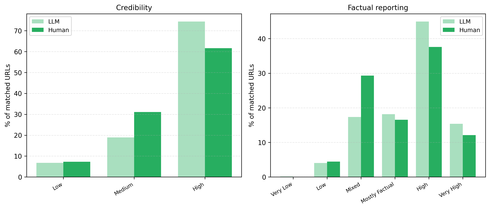

Abstract
We present the first field evaluation of LLM fact-checking deployed on a live social media platform, testing performance directly through X Community Notes' "AI writer" feature over a three-month period. Our LLM writer, a multi-step pipeline that handles multimodal content, conducts web and platform-native search, and writes contextual notes, was deployed to write 1,614 notes on 1,597 tweets and compared against 1,332 human-written notes on the same tweets using 108,169 ratings from 42,521 raters. Direct comparison of note-level platform outcomes is complicated by differences in submission timing and exposure between LLM and human notes; we therefore pursue two analysis strategies: a rating-level analysis modeling individual rater evaluations, and a note-level analysis that relies on common raters who rated all notes on the same post.
Rating-level analysis shows that LLM notes receive more positive ratings than human notes across raters with different political viewpoints, and note-level analysis shows LLM notes achieve significantly higher helpfulness scores among common raters. Rater-provided tags suggest that people consider LLM notes to use more neutral language and cite better sources. These findings provide field evidence that LLMs can contribute high-quality, broadly helpful fact-checking notes at scale, while showing that their evaluation is shaped by platform dynamics absent from controlled offline settings.
LLM Writer Pipeline
For each eligible post, our LLM writer compiles the post's text and timestamp together with context from quoted or replied-to posts, and directly processes associated images or video thumbnails. Grok-4-fast then conducts web and X search to gather evidence. GPT-5-mini decides whether a note is warranted and, when it is, drafts a source-grounded Community Note.
The triage step declined to write when a post was unlikely to be misleading (29.0% of retrieved posts) or when evidence was insufficient (6.9%). Drafts passed URL-validity, length, and Community Notes ClaimOpinion quality checks before submission.

Key Points
Ecological Validity
We present, to our knowledge, the first field evaluation of LLM fact-checking deployed on a real-world social media platform, assessed using organic user feedback under natural conditions rather than recruited evaluators or synthetic benchmarks.
Platform Dynamics Complicate Real-world Evaluation
LLM notes were typically submitted later than human notes because platform policy requires users to flag posts before AI writers can write. They consequently accumulated fewer ratings (median 22 vs. 51), and the Community Notes scoring algorithm's regularization can deflate scores for notes with fewer ratings. We therefore analyze individual ratings directly and complement that analysis with a common-rater design that recomputes note scores using only people who rated every note on the same post.
LLM Notes Receive More Positive Ratings Across Ideologies and Among Common Raters
Across raters with left-leaning, neutral, and right-leaning rating patterns, LLM-written notes had higher average percentages of helpful ratings and lower average percentages of unhelpful ratings than human-written notes, with the largest advantage among neutral raters (Figure 1). The primary model estimates an approximately 10-percentage-point increase in rating score for LLM notes among centrist raters (AI coefficient = 0.104, p < 0.001). Exploratory subgroup analyses find the largest advantages for health and medicine and conspiracy/pseudoscience, and the smallest for posts about AI-generated content.
We retained ratings from people who evaluated every note on a given tweet, then recomputed note helpfulness scores using only these common-rater ratings. LLM notes achieved significantly higher helpfulness scores than human notes (0.21 vs. 0.18; adjusted p = 0.010).
LLM Notes Cite More and Higher-Quality Sources
LLM notes cited more URLs than human notes (1.51 vs. 1.23 per note). Among citations matched to Media Bias/Fact Check, LLM-cited sources had higher average factual-reporting scores (3.478 vs. 3.207 on a 0–5 scale) and credibility scores (1.660 vs. 1.528 on a 0–2 scale), with both differences significant at p < 0.001 (Figure 2).
Rater Tags Suggest Better Sourcing and More Neutral Language—with a Limitation
LLM notes received the helpful tags “Good sources” more often (58.2% vs. 51.2%) and “Unbiased language” more often (48.3% vs. 45.5%). They received the unhelpful tags “Argumentative/biased” less often (15.4% vs. 22.3%), “Opinion/speculation” less often (22.4% vs. 26.7%), and “Missing/unreliable sources” less often (21.8% vs. 26.5%). However, LLM notes received “Note not needed” more often (36.6% vs. 25.7%), often when the writer interpreted jokes, satire, or personal opinions too literally.


Citation
@misc{li2026aifactcheckingwildfield,
title={AI Fact-Checking in the Wild: A Field Evaluation of LLM-Written Community Notes on X},
author={Haiwen Li and Michiel A. Bakker},
year={2026},
eprint={2604.02592},
archivePrefix={arXiv},
primaryClass={cs.CY},
url={https://arxiv.org/abs/2604.02592},
}
Build Your AI Community Notes Writer
Designing AI fact-checking systems that work in the real world is both super fun and deeply meaningful. X's Community Notes offers a unique opportunity to build and test these systems at scale, with real users interacting with your AI writer.
It is super cool that X Community Notes provides a public AI writer API that lets everybody build their own automated fact-checking pipeline and run on Community Notes. They also make their data and algorithm publicly available.
Questions or Feedback?
We are curious about your thoughts on this work. Leave your message below and it will be sent to us.